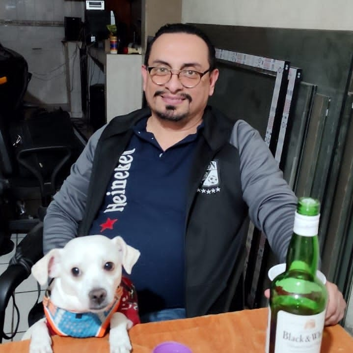

Acerca de mí
Mi nombre es Jose Alberto Pérez Martínez, Ingeniero en Sistemas y fundador de Servicios Computacionales JAPEMA.
Tengo más de 20 años de experiencia en soluciones de tecnología para empresas y particulares.
Mi misión es ayudar a las empresas a mejorar su productividad mediante el uso estratégico de herramientas tecnológicas.